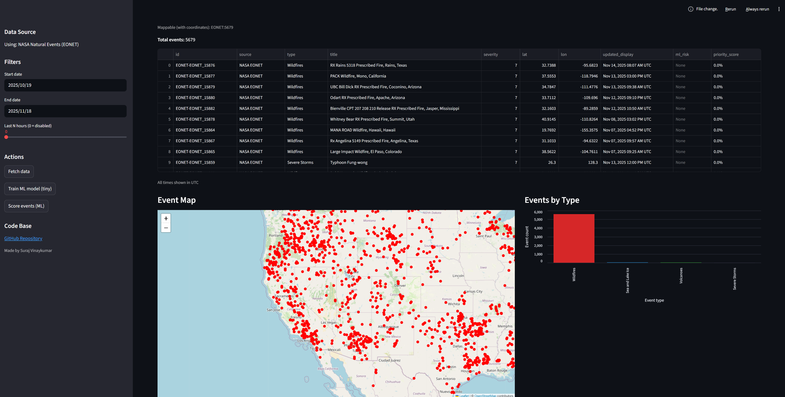

Crisis Intelligence Web app
Description
This project is a simple web application that helps visualize and monitor real-time global natural events from NASA’s EONET API. It collects live data on things like wildfires, volcanoes, sea and lake ice, and severe storms, and displays them on an interactive map so you can easily see what’s happening around the world. The idea behind building it was to create something that combines data, maps, and machine learning to make disaster information easy to understand and accessible for awareness, research, or quick insights.
On the technical side, the app is built entirely in Python using Streamlit for the front-end interface and Folium for the interactive world map. Data is fetched from NASA’s EONET API, which provides up-to-date information about natural events occurring globally. The app uses Pandas to clean and organize this data and stores it locally in a lightweight SQLite database. A small Logistic Regression model, implemented using scikit-learn, is trained to assign a “priority score” to each event, predicting which ones could have higher importance or risk. The app also includes a color-coded bar chart and map visualization to make it easy to compare different event types such as wildfires, volcanoes, or ice formations. Overall, the goal was to build a functional, visually appealing, and educational tool that brings together data analysis, machine learning, and visualization in one simple dashboard.
Technologies
Python, SQLite, Scikit-learn, Streamlit Cloud, Joblib (to save and load the trained model efficiently), Folium (for interactive world map)
Links
Dashboard
